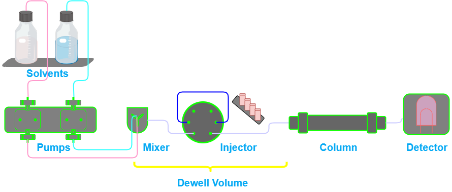
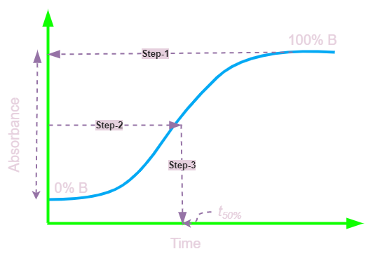

If you’re into (U)HPLC, then you know how frustrating it can be to transfer a gradient method between instruments and end up with inconsistent results. One of the most common culprits is the dwell volume (Vd), aka gradient delay volume.
But what is it exactly? Basically, the dwell volume is the amount of space within the fluidic path between where your eluents (the liquids used in chromatography) are mixed and where they hit the column. This includes all the tubing, valves, mixer, the autosampler loop and other components in your LC system (see the Figure).

Why does this matter? Well, if you’re doing a simple isocratic analysis (where the eluent composition doesn’t change), you don’t have to worry about it too much. But if you’re doing gradient chromatography (where the eluent composition changes over time), the dwell volume can have a big impact on your results. If you want to maintain the retention, selectivity, and resolution of your analytes, you need to know the dwell volume of your LC system. This is especially crucial when transferring gradient methods between different instruments.
Different LC systems have different dwell volumes (could range from 100 uL to 1100 uL), depending on things like the type of pump you’re using and whether you have any mixers installed (See my other posts for pump designs). So if you’re transferring a gradient method from one instrument to another, or using a different column format, you might see differences in your results because of dwell time variations. Even if you adjust the start time of the gradient to account for the system dwell volume, you may still encounter issues with inconsistent separation selectivity. That’s why it’s always a good idea to confirm the identification of analyte peaks.
To make sure you’re getting accurate results, it’s a good idea to understand and measure the dwell volume of your LC system. That way, you can adjust your methods as needed to account for any differences between instruments.
A Quick Guide to Determining Dwell Volume
Hey there, fellow HPLC enthusiasts! Last time we discussed the importance of determining dwell volume. Today, we’re talking about dwell volume determination. It’s a quick and easy way to measure the dwell volume of your HPLC system.
Here’s how to do it:
First things first, you’ll need to replace your column with a Zero Dead Volume connector. Then, fill Solvent Line A with water and Solvent Line B with water containing 0.1% v/v acetone. Use UV detection at 265 nm to monitor the run.
Next, run a gradient that’s typical of the gradients you usually use in the lab. I recommend a 0-100% B gradient run over 20 minutes at 2 mL/min. Keep the injector in the inject position during this measurement, because the injector loop volume is part of the dwell volume.
After the gradient is run, you should see a chromatogram that looks like the one below. The baseline at the beginning of the chart denotes 100% A, while the final flat baseline represents 100% B. The sloping line in between indicates the transition between the two solvents.

To determine the dwell volume, measure the offset between the low and high baselines and locate the midpoint. Draw a horizontal line from the midpoint until it intersects the rising baseline. From this intersection, drop a vertical line to the time axis. Deduct half of the gradient time (\(t_G\)) (which is 10 minutes in this instance), and the remaining time is the dwell time. To convert the dwell time to dwell volume (\(V_D\)), apply the formula \(VD\) = \(T_D x F\), where F is the flow rate.
\[ t_D = t_{50\%} - t_G \] \[ V_D = t_D * F \] After determining the dwell volume for your HPLC system, it should remain constant unless significant modifications to the plumbing are made. However, it’s recommended to measure it periodically (every 6-12 months) during your system’s performance evaluation. This practice may even reveal other issues within the system. Who knows, it might even highlight other problems in the system!
Voila! You now know the dwell volume of your LC system. This information will come in handy when you’re transferring methods between instruments and want to ensure consistent results.